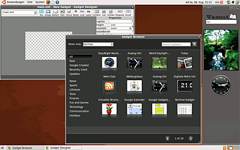

Google Gadgets
Archivierte Anleitung
Dieser Artikel wurde archiviert, da er - oder Teile daraus - nur noch unter einer älteren Ubuntu-Version nutzbar ist. Diese Anleitung wird vom Wiki-Team weder auf Richtigkeit überprüft noch anderweitig gepflegt. Zusätzlich wurde der Artikel für weitere Änderungen gesperrt.
Zum Verständnis dieses Artikels sind folgende Seiten hilfreich:
Auch die Google Gadgets for Linux  fallen unter das Stichwort Desklets: kleine Miniprogramme, die z.B. eine Uhr, einen Kalender oder einen Wetterbericht direkt auf dem Desktop anzeigen können. Nachdem lange Zeit nur Versionen für Windows und Mac OS X bereit standen, gibt es sie nun auch für Linux. Zwar befindet sich die Entwicklung noch im Beta-Stadium, dennoch läuft das Programm bereits sehr stabil – auch die Version aus den offiziellen Paketquellen. Die Weiterentwicklung wurde inzwischen eingestellt.
fallen unter das Stichwort Desklets: kleine Miniprogramme, die z.B. eine Uhr, einen Kalender oder einen Wetterbericht direkt auf dem Desktop anzeigen können. Nachdem lange Zeit nur Versionen für Windows und Mac OS X bereit standen, gibt es sie nun auch für Linux. Zwar befindet sich die Entwicklung noch im Beta-Stadium, dennoch läuft das Programm bereits sehr stabil – auch die Version aus den offiziellen Paketquellen. Die Weiterentwicklung wurde inzwischen eingestellt.
Die verschiedenen Gadgets werden über das Programm geladen und sind prinzipiell kompatibel zu den (universellen) Gadgets von iGoogle  .
.
Installation¶
Folgendes Paket kann bis einschließlich Ubuntu 10.10 installiert [1] werden:
google-gadgets-gtk (universe, für GNOME-Benutzer)
 mit apturl
mit apturl
Paketliste zum Kopieren:
sudo apt-get install google-gadgets-gtk
sudo aptitude install google-gadgets-gtk
google-gadgets-qt (universe, für KDE-Benutzer)
mit apturl
Paketliste zum Kopieren:
sudo apt-get install google-gadgets-qt
sudo aptitude install google-gadgets-qt
In neueren Ubuntu-Versionen sind die Google Gadgets nicht mehr enthalten.
Benutzung¶
 Nach der Installation ist das Programm im GNOME-Menü unter "Anwendungen -> Internet -> google gadgets (GTK)" zu finden. Es erscheint sofort ein Navigationsbereich (Sidebar) mit einigen vorausgewählten Gadgets (News und eine Uhr) auf dem Desktop.
Hinzufügen von Gadgets¶
Aus dem Aufklapp-Menü (oben rechts) lassen sich über den Menüpunkt "Add Gadgets" weitere Gadgets hinzufügen. Fährt man mit der Maus über ein Gadget, erscheint ebenfalls ein Aufklapp-Menü, um es zu löschen oder zu bearbeiten.
Erstellen eigener Gadgets¶
Zur Erstellung eigener Google-Gadgets findet man unter "Anwendungen -> Entwicklung -> google gadget designer" die Möglichkeit, dies zu tun.
Links¶
Kunterbuntes Spielzeug - Miniprogramme von Google unter Linux nutzen - Artikel aus EasyLinux 03/2009
Desklets
 Übersichtsartikel
Übersichtsartikel
- Erstellt mit Inyoka
-
 2004 – 2017 ubuntuusers.de • Einige Rechte vorbehalten
2004 – 2017 ubuntuusers.de • Einige Rechte vorbehalten
Lizenz • Kontakt • Datenschutz • Impressum • Serverstatus -
Serverhousing gespendet von